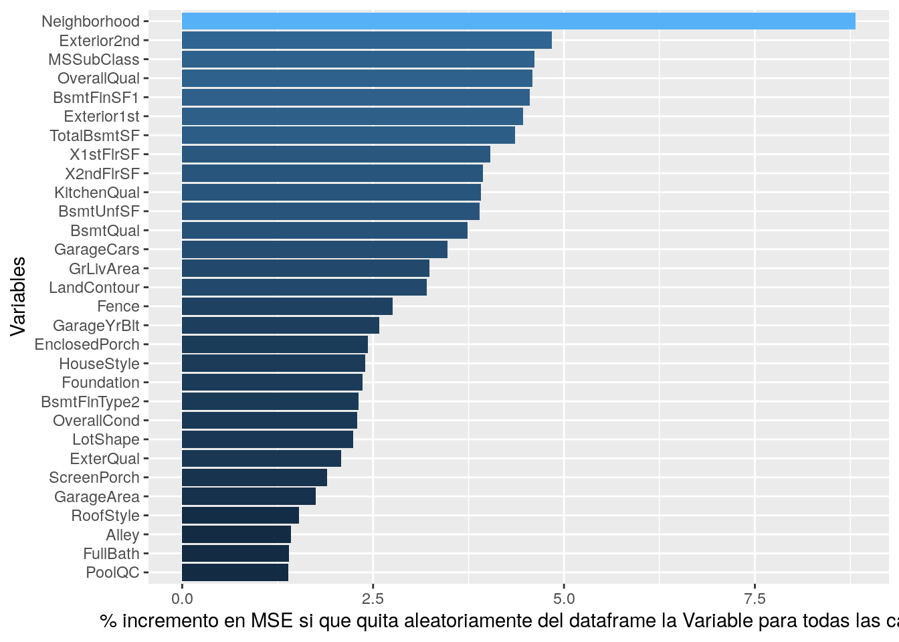

En primer lugar cargaremos los datasets obtenidos en las fases anteriores del modelado de datos.
library(car)
library(mgcv)
library(parallel)
library(dplyr)
library(ggplot2)
datasetTrainEvaluacion <- readRDS("datasetTrain.rds")
datasetTestEvaluacion<- readRDS("datasetTest.rds")
validation_sin_na_evaluacion<- readRDS("datasetValidation.rds")
datasetTrainTransformedEvaluacion <- readRDS("datasetTrainTransformed.rds")
datasetTestTransformedEvaluacion <- readRDS("datasetTestTransformed.rds")
validationTransformedEvaluacion <- readRDS("validationTransformed.rds")
names(datasetTrainEvaluacion) <- make.names(names(datasetTrainEvaluacion))
names(datasetTestEvaluacion) <- make.names(names(datasetTrainEvaluacion))
names(validation_sin_na_evaluacion) <- make.names(names(validation_sin_na_evaluacion))
names(datasetTrainTransformedEvaluacion) <- make.names(names(datasetTrainTransformedEvaluacion))
names(datasetTestTransformedEvaluacion) <- make.names(names(datasetTestTransformedEvaluacion))
names(validationTransformedEvaluacion) <- make.names(names(validation_sin_na_evaluacion))
datasetTrainEvaluacionCaros <- datasetTrainEvaluacion %>% filter(GrupoPrecio == 'Caros')
datasetTrainEvaluacionBaratos <- datasetTrainEvaluacion %>% filter(GrupoPrecio == 'Baratos')
datasetTestEvaluacionCaros <- datasetTestEvaluacion %>% filter(GrupoPrecio == 'Caros')
datasetTestEvaluacionBaratos <- datasetTestEvaluacion %>% filter(GrupoPrecio == 'Baratos')En esta parte de la práctica, intentaremos evaluar cuáles son las variables que más influyen en el precio de una casa. Además, como nuestro objetivo es obtener las variables que son más significativas para distinguir las casas que consideramos “baratas” de las consideradas como “caras”, intentaremos realizar el alterior análisis restringidos a las poblaciones de cada una de las familias de casas. Como se verá en el posterior análisis de los clusters que forman estas casas, pondremos el umbral de decisión para distinguir casas baratas de caras en un precio de unos 250000 dólares.
Al hacer esta división nos encontramos con un dataset muy desbalanceado. El número de casas que superan en su precio de venta este valor no llegan al 5%.
Para hacer una primera estimación de las variables a utilizar en nuestros modelos, generaremos varios ramdon-forest intentando predecir la variable “SalePrice” con los dataset obtenidos en el paso anterior (casas baratas, casas caras y todas las casas). Comenzaremos por realizar este proceso sobre el conjunto de todas las casas y dibujaremos un gráfico resultado de generar el random-forest que nuestra una idea de lo importante que es una variable en el resultado final. Esta importancia muestra de forma aproximada (en valor medio para todos los árboles generados en el random-forest) el efecto en la precisión de la regresión (a través de su RMS) al eliminar la varible del conjunto de variables del modelo. El resultado es el siguiente:
library(randomForest)
library(ggplot2)
datasetTrainTestEvaluacionBaratos <- dplyr::union(datasetTrainEvaluacionBaratos,datasetTestEvaluacionBaratos)
datasetTrainTestEvaluacionCaros <- dplyr::union(datasetTrainEvaluacionCaros,datasetTestEvaluacionCaros)
datasetTrainTestEvaluacion <- dplyr::union(datasetTrainEvaluacion,datasetTestEvaluacion)
excludedVarsEvaluacion <- c('SalePrice','GrupoPrecio','TotalSF','MoSold','YrSold')
dataframeTestImportantesBaratos <- readRDS("dataframeTestImportantesBaratos.rds")
arbol_visualizacion_baratos <- readRDS("arbol_visualizacion_baratos.rds")
dataframeTestImportantesCaros <- readRDS("dataframeTestImportantesCaros.rds")
arbol_visualizacion_caros <- readRDS("arbol_visualizacion_caros.rds")
set.seed(2018)
arbol_visualizacion_caroBarato <- randomForest(x= datasetTrainTestEvaluacion %>% dplyr::select(-excludedVarsEvaluacion) , y=datasetTrainTestEvaluacion$SalePrice, ntree=100,importance=TRUE)
varImportantes <- importance(arbol_visualizacion_caroBarato)
dataframeTestImportantes <- data.frame(Variables = row.names(varImportantes), MSE = varImportantes[,1])
dataframeTestImportantes <- dataframeTestImportantes[order(dataframeTestImportantes$MSE, decreasing = TRUE),]
ggplot(dataframeTestImportantes[1:30,], aes(x=reorder(Variables, MSE), y=MSE, fill=MSE)) + geom_bar(stat = 'identity') + labs(x = 'Variables', y= '% incremento en MSE si que quita aleatoriamente del dataframe la Variable para todas las casas') + coord_flip() + theme(legend.position="none")Si lo que intentamos es precedir el valor final de la casa (no si es barata y cara), lo que nos encontramos es que claramente son más importantes las variables que tienen que ver con el área de la casa habitable, el área del solar donde se encuentra la casa, el área habitable de las habitaciones de dicha casa y el tipo de garage. En este caso, el vecindario, el tipo de casa, la calificación del tasador en cuanto a el estado en que se encuentra dicha casa, la superficie del primer piso, etc. tienen un menor peso a la hora de evaluar el precio final mediante un proceso de regresión.
Ahora realizaremos el mismo proceso pero haciendo que el random forest intente clasificar la división entre precios caros y baratos que hemos hecho de momento artificialmente:
set.seed(2018)
arbol_visualizacion_caroBarato <- randomForest(x= datasetTrainTestEvaluacion %>% dplyr::select(-excludedVarsEvaluacion), y=datasetTrainTestEvaluacion$GrupoPrecio, ntree=100,importance=TRUE)
varImportantes <- importance(arbol_visualizacion_caroBarato)
dataframeTestImportantes <- data.frame(Variables = row.names(varImportantes), MSE = varImportantes[,1])
dataframeTestImportantes <- dataframeTestImportantes[order(dataframeTestImportantes$MSE, decreasing = TRUE),]
ggplot(dataframeTestImportantes[1:30,], aes(x=reorder(Variables, MSE), y=MSE, fill=MSE)) + geom_bar(stat = 'identity') + labs(x = 'Variables', y= '% incremento en MSE si que quita aleatoriamente del dataframe la Variable para todas las casas') + coord_flip() + theme(legend.position="none")
En el se muestran que las variables que tienen más impacto a la hora de decidir el precio de una casa AL ESTABLECER LA CATEGORIZACION EN CAROS Y BARATOS son las que tienen que ver con el vecindario, las diversas superficies de las zonas en las que se descompone una casas, los materiales utilizados en la fachada, el tipo de casa, la valoración realizada por la inmobilaria del estado de la casa, y el area del sotano y de las distintas plantas en la que se descompone la casa. Variables que tienen que ver con las calidades y superficie de las áreas no habitables excepto el sótano (porche, garaje, etc.) parecen tener una importancia menor.
Realizaremos ahora el mismo procedimiento pero sobre únicamente la población de casas baratas. El resultado es el siguiente:
ggplot(dataframeTestImportantesBaratos[1:30,], aes(x=reorder(Variables, MSE), y=MSE, fill=MSE)) + geom_bar(stat = 'identity') + labs(x = 'Variables', y= 'incremento en MSE si que quita aleatoriamente del dataframe la Variable para las casas baratas') + coord_flip() + theme(legend.position="none")En este modelo, a diferencia del anterior, cobran menos importancia las variables que modelan el vecindario, características del entorno urbano en el que se encuentran, características como el numero de baños, etc. Cobra aquí mucha más importancia la variable ‘LotArea’ frente a la superficie habitable de la casa, así como el número medio de habitaciones.
Ahora realizaremos el procedimiento anterior sobre las casas clasificadas como “caras”:
ggplot(dataframeTestImportantesCaros[1:30,], aes(x=reorder(Variables, MSE), y=MSE, fill=MSE)) + geom_bar(stat = 'identity') + labs(x = 'Variables', y= 'incremento en MSE si que quita aleatoriamente del dataframe la Variable para las casas baratas') + coord_flip() + theme(legend.position="none")En este tipo de casas cobra más importancia el area habitable de la misma, el área y calidades del sótano y la variable ‘OverallQual’, que es una medida de la calidad de los materiales utilizados en la construccion. Otras variables importantes son el número de baños y el número de coches que caben en el garaje (correlacionado con la superficie el mismo). Las calidades de los distintos tipos de habitáculos dentro de una casa cobran más importancia que las superficies de las mismas. Las variables que tienen que ver con los vecindarios en los que están, el estilo arquitectónico, etc. tienen mucha menos imporancia en este tipo de casas, lo que indican claramente que están situadas en unos pocos vecindarios dentro del dataset. El año de construcción y el tamaño del “Lot” tampoco parecen tener mucha importancia, lo que indica que todas estas casas tienen estas características muy similares.
Una vez realizado este análisis, las variables que consideramos más relevantes para distinguir las casas consideradas “caras” de las “baratas” son las siguientes:
var_modelo_clasificador <- readRDS("var_modelo_clasificador.rds")
var_modelo_clasificador## [1] "GrLivArea" "LotArea" "Neighborhood" "BedroomAbvGr"
## [5] "FullBath" "MSSubClass" "YearBuilt" "2ndFlrSF"
## [9] "1stFlrSF" "MasVnrArea" "OverallCond" "BldgType"
## [13] "BsmtUnfSF" "TotalBsmtSF" "GarageType" "Heating"
## [17] "HouseStyle" "GarageArea" "Total_porch_SF" "OverallQual"
## [21] "BsmtQual" "BsmtFinSF1" "Total_Bathrooms" "LandContour"
## [25] "SaleCondition" "KitchenQual"